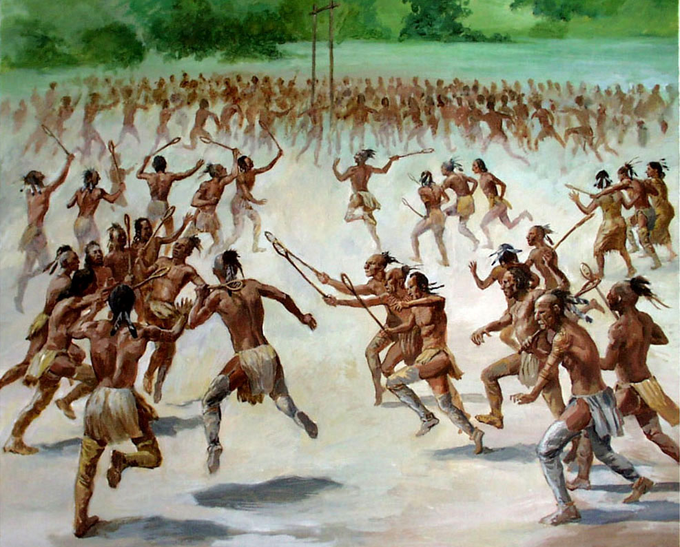
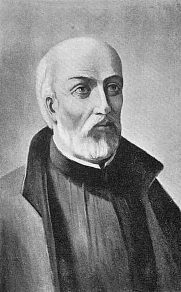
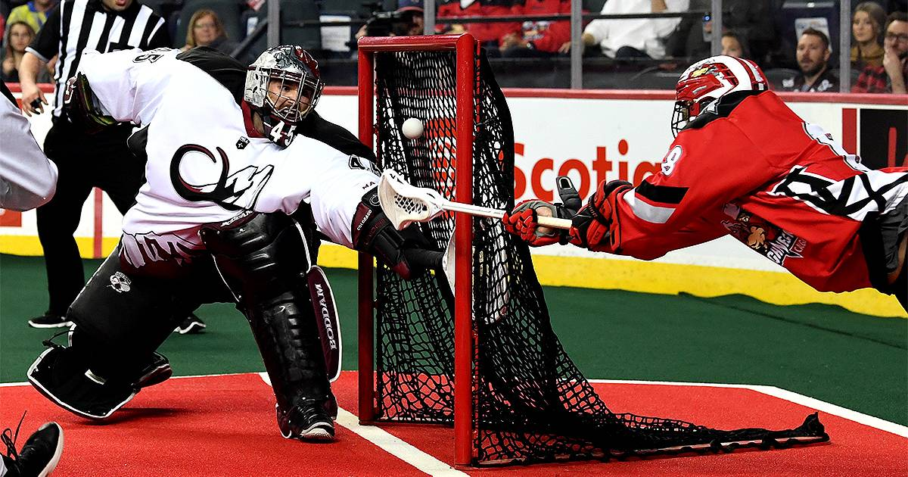
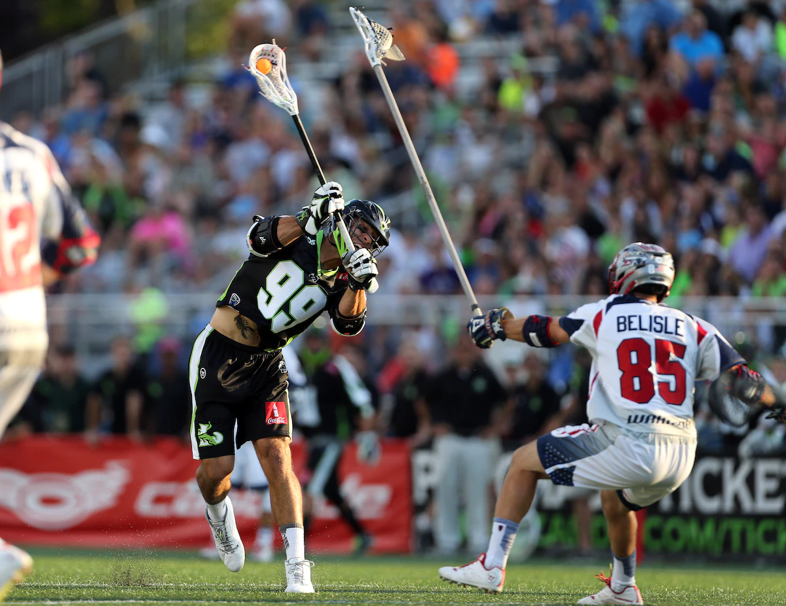

|  | In 1000 A.D. the partially Wooden Lacrosse Stick was created. The Algonquian tibe was the first Native American tribe to play lacrosse in the St. Lawrance Valley. It was originally called stick ball. | |
| Goals would be denoted by large rocks or trees. | ||
| The Native American games were large public events. They took several days and were played on "fields" that stretched for miles. There could be any number of players in the old games, said to have thousands of participants at a time. There were no boundaries, and the only rule was no touching the ball with your hands. | ||
|  | In the 1630s, Europeans would begin to watch Native Americans playing the game. Jean de Brebeuf would name it "lacrosse" in 1636. | |
| In 1834 the Caughnawaga tribe showed people in Montreal how to make a lacrosse stick. This was instrumental to the growth of the sport, as Canada would lead to adopt lacrosse as their national sport in just 1860. |  | |
| In 1930s, Box Lacrosse, the indoor version of the game, was developed in Canada. | ||
| In 1904 and 1908, lacrosse participated in the olympics, before it was dropped. Since then it has taken part in the World Games. | ||
|  | In 2001, the Major League Lacrosse would have their first game. In 2018 the Premier Lacrosse League was developed and the MLL would eventually merge with them in 2020 | |